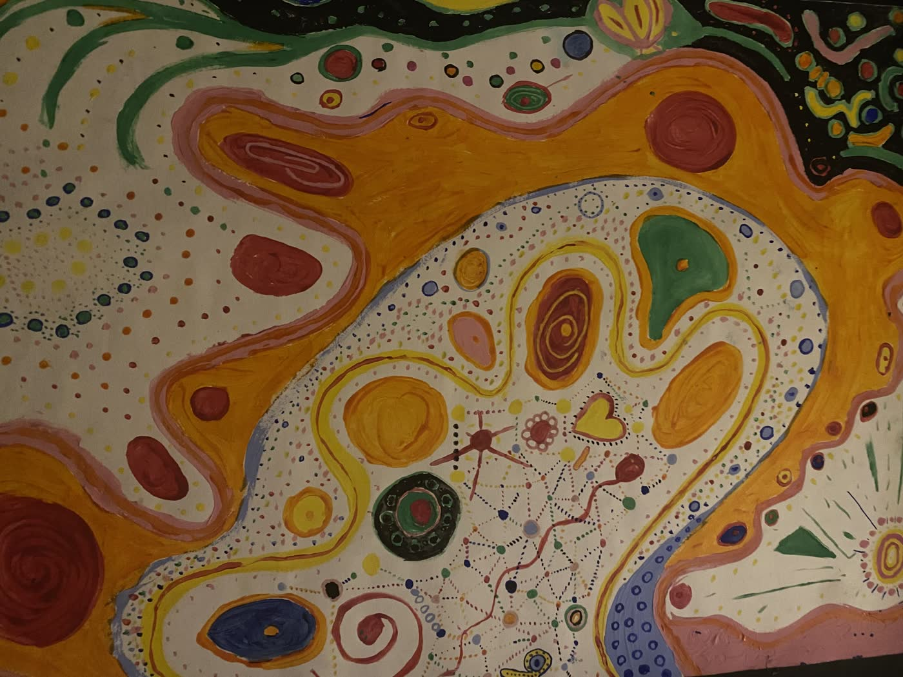
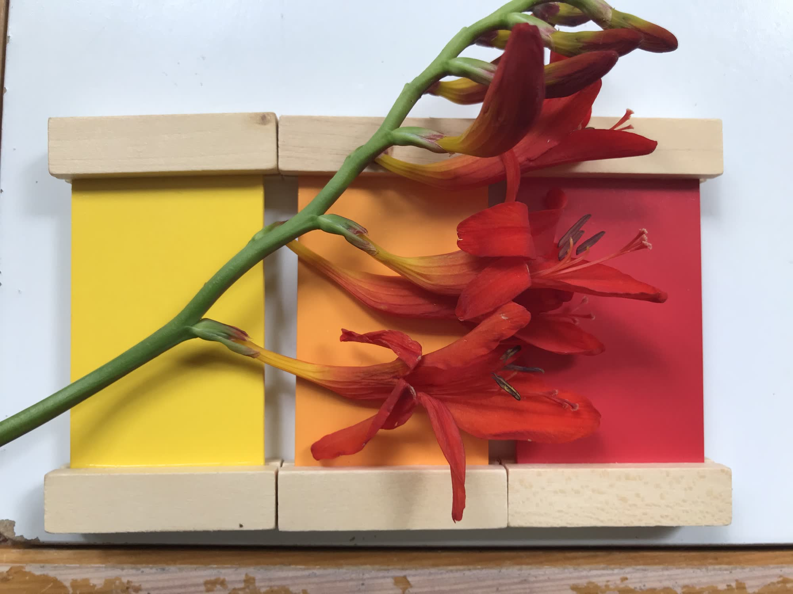
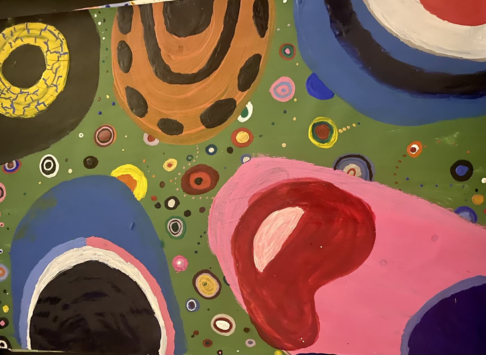
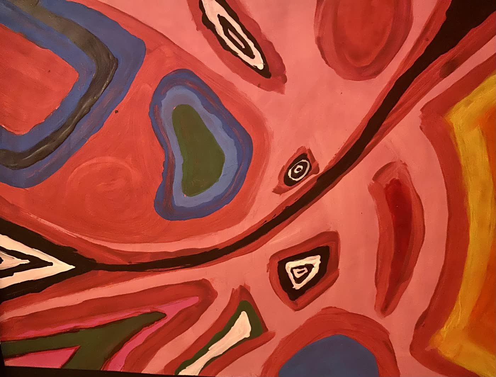

Wander, and see where you are drawn.
My life is an exploration of what it means to be human.
Through education, creativity, movement, community and spiritual practice, I explore the ways in which we can grow, heal and deepen our relationship with ourselves, one another and the living world.
These are not separate paths for me, but interconnected expressions of a life guided by curiosity, love and service.
I invite you to explore, to discover, and perhaps to find a place where our paths meet.
— Hadi
Five expressions of one journey
Where would you like to begin?
Life is art
Creativity flows between them all
Paintings, prepared spaces, altars of flowers and candlelight.









Where Education meets Sufi Inner Life
The Soul of the Child
How can we, as adults, give children the space to unfold from within and follow their own soul's journey?
An explorable tree that follows the child from roots to sky, through Montessori's planes of development and the Sufi understanding of the heart.
Explore the tree →